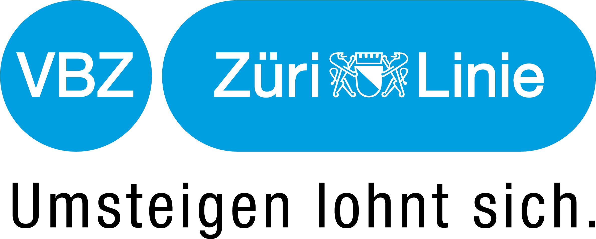
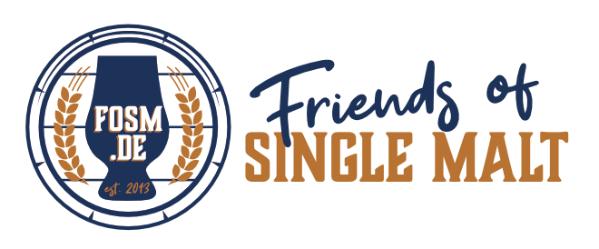
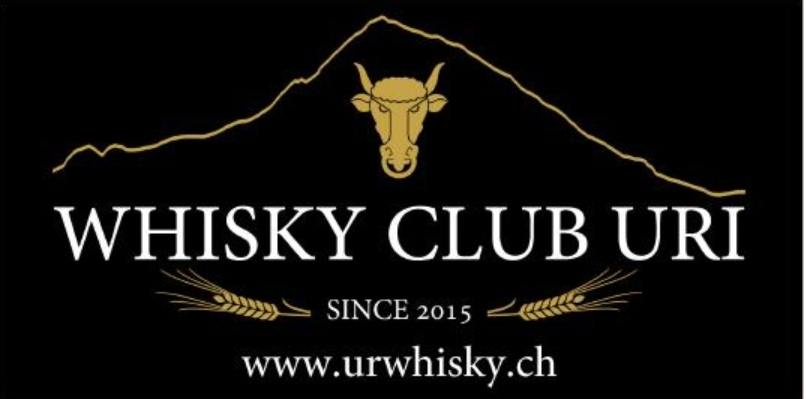
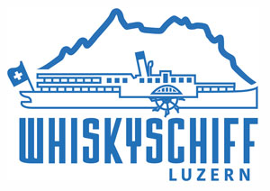
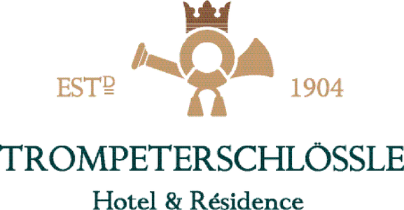

Media Partner
The largest German-language whisky magazine. The Whisky Times Awards are presented as part of the festival in the Blauer Saal.
Partners
Media partner, venue and collaborations that make the Whisky & Music Festival possible.
Without these partnerships, the festival wouldn't exist in this form.
The largest German-language whisky magazine. The Whisky Times Awards are presented as part of the festival in the Blauer Saal.

Zürich's public transport operator gets visitors to the Volkshaus comfortably by tram and bus.
From the Swiss and international whisky community.
Over 1000 whiskies, lifestyle exhibitors, private tastings, street food and live concerts at the Grosse Reithalle Winterthur — the big sister fair each spring.

Friends of Single Malt Scotch Whisky — the major German-language whisky blog since 2013, with distillery tours, Scotland travel reports and tasting notes.
Whisky enthusiasts from the village of Thürnen in Basel-Landschaft, founded on 22 February 2022. The club promotes knowledge of whisky culture, origin and diversity — especially from Scotland and Ireland — through its own tastings, seminars, trips and fair visits.

With URWHISKY, the club produces its own cask-matured bottling project — for over ten years its members have been maturing and tasting their own vintages and cultivating whisky culture in Central Switzerland.

Switzerland's most exclusive whisky fair: traders, importers and producers present their finest drams on board, alongside seminars and tastings over three days each March.

The whisky hotel on Lake Constance. Also an exhibitor →
Sponsoring
Interested in supporting the Whisky & Music Festival as a sponsor? We'd love to hear from you.
Submit sponsorship enquiry